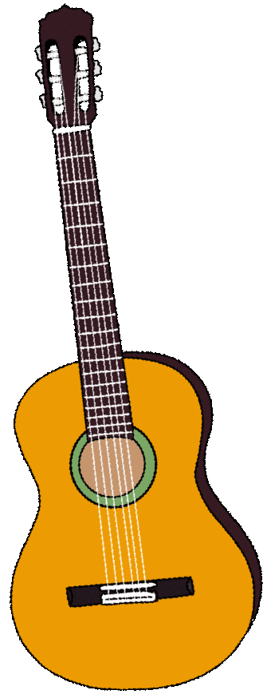
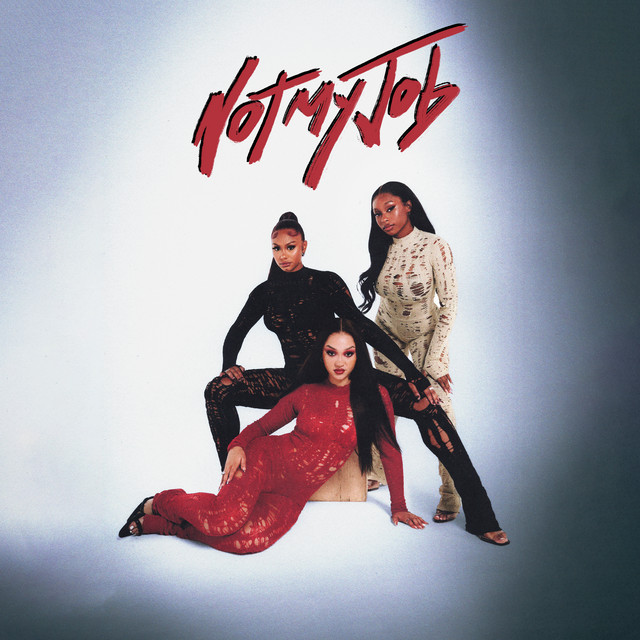
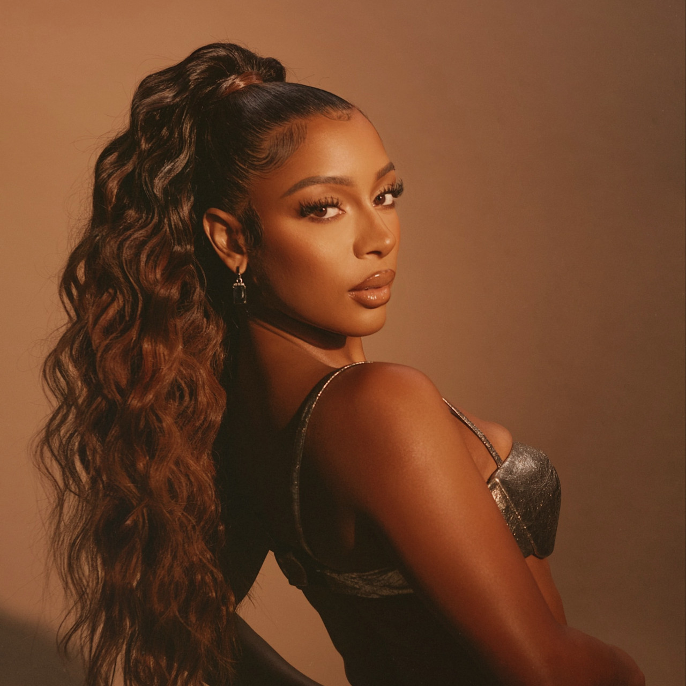

music 🎵

I adore music and have since I was a child. I play 3 instruments: the guitar, piano and tin whistle and I am self taught in all of my instuments. My favourite to play out of the 3 is the piano because of it's versatility.

I also love listening to music. My mother had a very heavy influence on my music taste and instilled a great love of R&B in me from a young age through artists like Myá, Ne-yo, Destiny's Child, John Legend and so much more. My favourite artists right now are FLO and Victoria Monét, both of whom are R&B artists.
FLO
FLO are a girl group from England and they have released some of my favourite songs ever. I adore all of songs but my favourite song from them is called 'Not My Job'. I love this song because it's intro is so entrancing and really sets the pace for the rest of the song and also the other songs on the EP. Check out their webiste here.
Victoria Monét
My other favourite artist is Victoria Monét, . She's written so many popular songs today and has worked with artists like Ariana Grande, Selena Gomez, BLACKPINK, Fifth Harmony, Khalid and much, much more. She is one of the best R&B artists and song writers around today. My favourite songs of her's are 'Moment' and 'Jaguar'. Victoria has recently shot to fame after another of her songs 'On My Mama' went viral back in September 2023 which paved the way to Victoria taking home not one, not two but THREE Grammy's, winning 'Best New Artist', Best R&B Album' and 'Best Non-Classical Engineered Album' for her debut record “Jaguar II.”

Music has been such an important and grounding part of my life. It has been my anchor in times when I've wanted to drift away and a bridge to all my dear ones through our shared songs which is why I'll always be greatful to the artists who have contributed to my playlist.